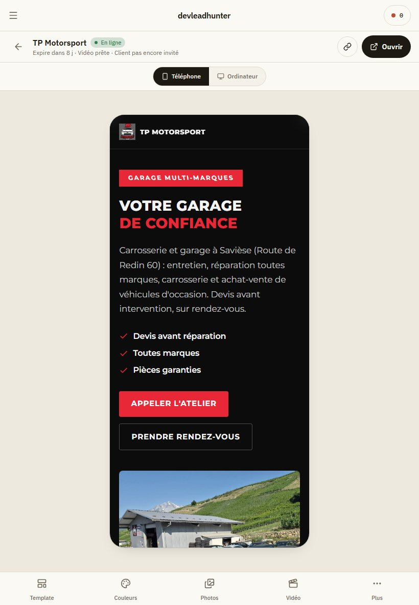
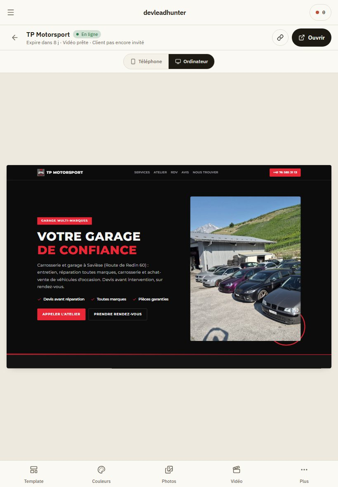
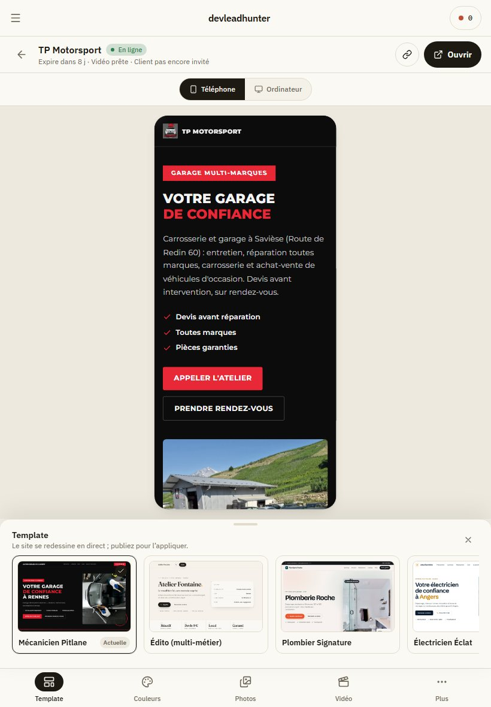
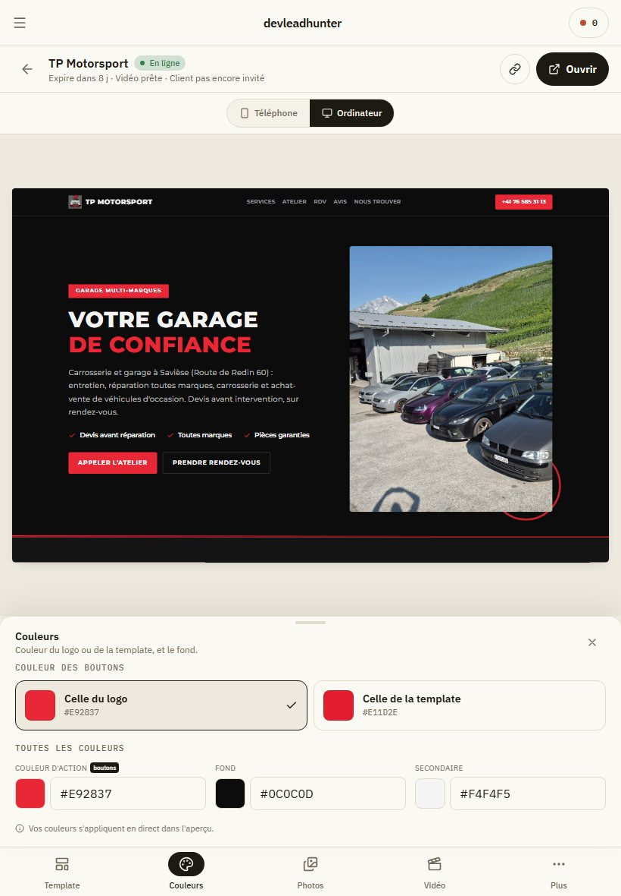
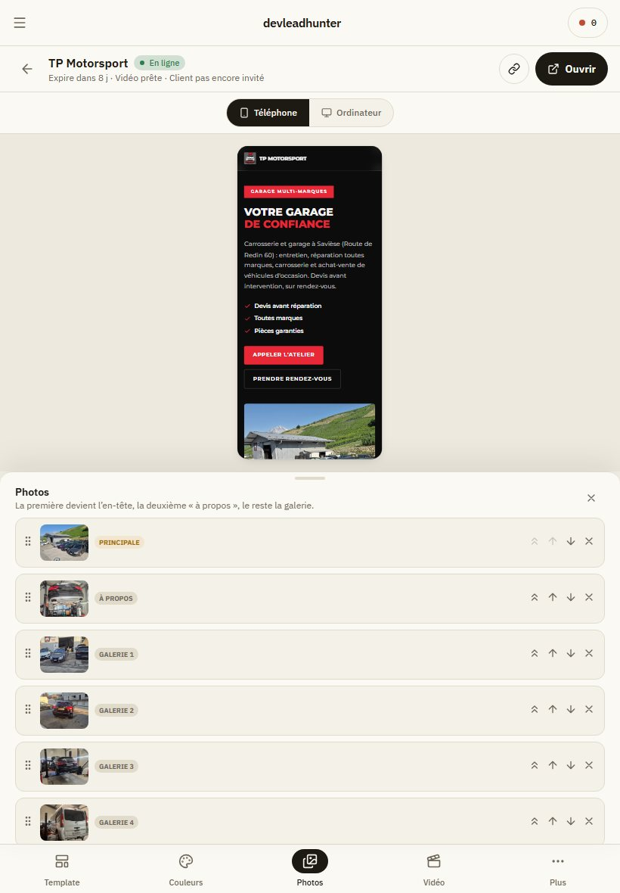
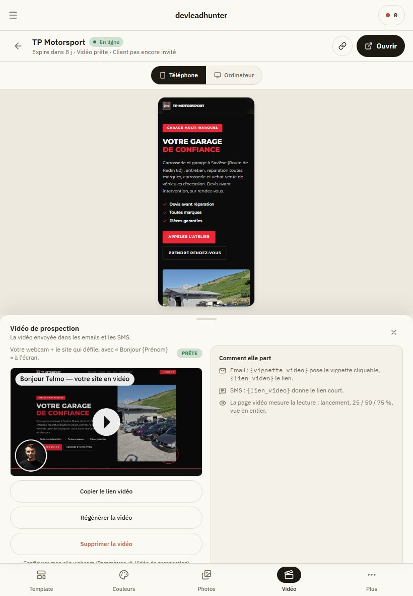
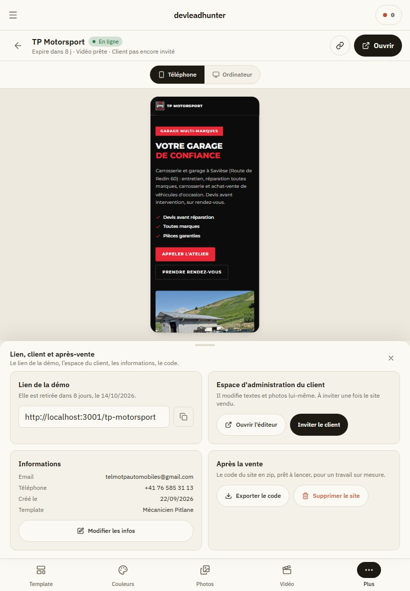
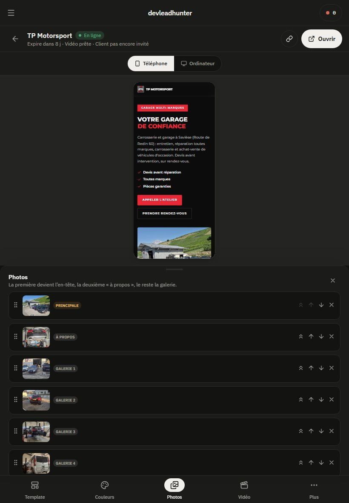
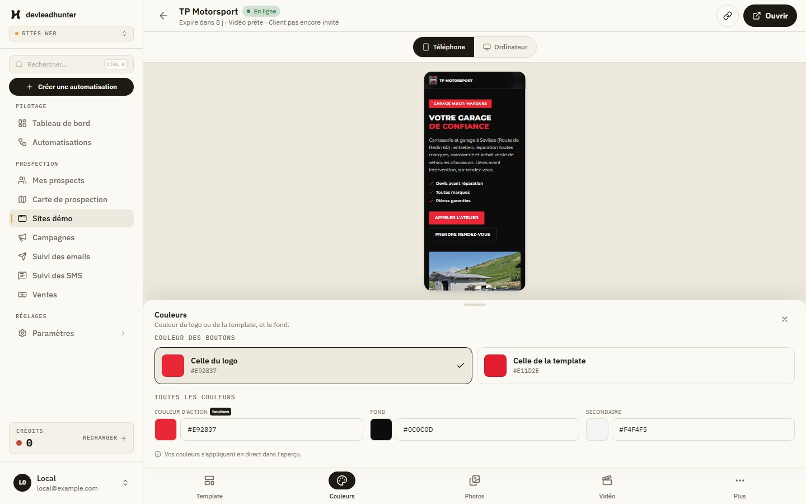

La page d'un site démo : l'atelier
Ce ne sont pas des dessins : ce sont des captures du vrai logiciel, en local, sur le vrai site de TP Motorsport (son contenu, ses photos, sa vidéo), à la taille d'un iPad en portrait (820 × 1180). La page n'est plus une fiche à lire : c'est le site lui-même, avec une barre d'outils en bas, comme une appli de retouche.
1. Le principe
- Le site en plein écran, dans un vrai téléphone (390 × 844) ou un vrai écran d'ordinateur (1440 × 900) réduit à l'échelle ; il défile à l'intérieur. En haut, une barre fine : retour, nom, état, « Expire dans 8 j · Vidéo prête · Client pas encore invité », copier le lien, ouvrir.
- Une barre d'outils en bas : Template, Couleurs, Photos, Prestations (seulement pour les templates qui en ont), Vidéo, Plus.
- Un volet qui monte quand on touche un outil. Il prend au plus 44 % de l'écran : le site se réduit au-dessus, il n'est jamais caché, et il change en direct pendant qu'on règle.
- Publier remplace « Sauvegarder » : dès qu'il y a une modification, le bouton apparaît en haut et un point ambre marque l'outil concerné.
2. Sur iPad, en portrait








3. Sur un ordinateur
Même atelier. L'écran d'ordinateur dans l'aperçu garde son format 16 : 10.

4. Ce qui reste à décider
- Le volet pourrait se tirer plus haut au doigt (deux hauteurs : réglage, plein) ; ici une seule hauteur.
- Les photos restent une liste à flèches : sur iPad, une grille de grandes vignettes qu'on glisse serait plus naturelle. À dessiner si cette direction est retenue.
- Dans l'app installée sur iPad, la barre d'onglets du bas (Campagnes, Notifications…) est encore là sous la barre d'outils : à masquer sur cette page.
- « Modifier les infos » (nom, téléphone, email, description) reste une page à part.
Historique
Première proposition du 06/10 (onglets Aperçu / Apparence / Photos / Vidéo / Client sur l'ancien squelette) : refusée, « ça ressemble à ce que j'ai déjà ». Deux captures gardées : Photos, Client. L'état d'aujourd'hui : Résumé, Configuration, téléphone.